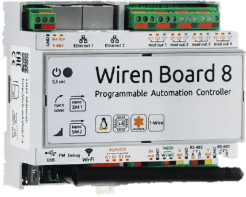
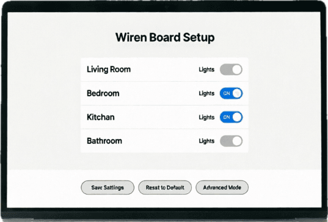
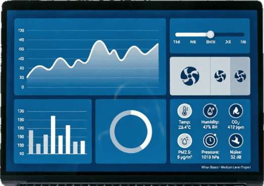
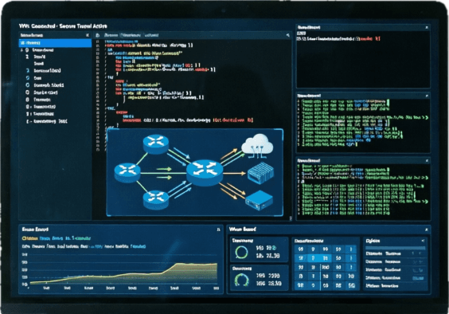

Заказать расчёт стоимости программирования
Закажите быстрый расчёт стоимости без обязательств. Если требуется индивидуальная разработка под ключ, оставьте заявку — специалисты свяжутся с вами в течение 24 часов

Предлагаем индивидуальную разработку системы автоматизации «под ключ»

Wiren Board (WB) — мощная платформа и экосистема на базе Debian Linux, которая даёт безграничную свободу для автоматизации зданий, промышленных и IoT-проектов. Её главная фишка — гибкость и открытый софт
Для прошивки адресов Modbus RTU по шине RS-485, создания веб-интерфейсов и интеграции по MQTT нужны основы системного администрирования и программирования
Индивидуальная разработка промышленной автоматизации под ключ: написание сложной логики, включая визуальное программирование в Node-RED, интеграция стороннего оборудования по Modbus TCP и создание кастомных графических дашбордов
Цена на программирование напрямую зависит от выбранного формата работы и масштаба объекта

Первичная настройка контроллера: регистрация модулей через встроенный веб-интерфейс Wiren Board, тестирование обмена данными по Modbus и простое включение и выключение света без многошаговых сцен

Управляющая логика для вентиляции, отопления и освещения: контроль температуры и влажности, диммирование светодиодных лент. Наглядные экраны управления во встроенном веб-интерфейсе контроллера для ежедневной работы

Продвинутые скрипты автоматизации, сопряжение контроллера с внешними экосистемами и сервисами, защищённый удалённый доступ через VPN. При необходимости подключаются сетевые серверы и счётчики, данные обрабатываются в реальном времени
Закажите быстрый расчёт стоимости без обязательств. Если требуется индивидуальная разработка под ключ, оставьте заявку — специалисты свяжутся с вами в течение 24 часов
Обследование объекта, определение параметров и алгоритмов управления в местах установки оборудования. Фиксация требований заказчика
Формирование требований, подбор товаров из каталога магазина для комплектации объекта. Договор и аванс за оборудование
Схемы подключений, чертежи щита и алгоритмы работы; при необходимости расчёт длины кабеля и количества материалов
Прошивка адресов Modbus, настройка каналов ввода и вывода, проверка каждого входа и выхода, настройка правил и загрузка системы в контроллер
Тестирование сценариев на объекте, обучение персонала и подготовка к эксплуатации. Акт выполненных работ и финальный расчёт
Инструменты доступа и техническая поддержка системы. Консультации пользователей, обновление ПО контроллеров по запросу